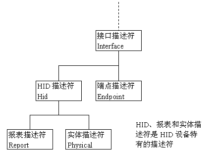

HID设备是USB规范定义的设备类型之一，其分类号为0x03.
关于USB设备类型定义，可参见本站：USB设备类型定义 - USB中文网
HID设备除了用于专门的输入输出设备外，有时也与其它的设备类型组合成一个复杂的设备。如对于UVC摄像头设备，可以附带一个UAC麦克风音频设备和一个HID设备用于固件升级或自定义通讯。
HID设备类型定义于接口描述符中，通过bInterfaceClass、bInterfaceSubClass和bInterfaceProtocol来标识。
HID设备Class
对于HID类设备，接口描述符的bInterfaceClass字段值固定为0x03.
HID设备SubClass
在HID规范的早期，SubClass用于标别不同类型HID类设备的特定协议，但随着HID设备附加功能的变化，但很快就发现这种方法限制太多。设备需要适应狭义定义的子类，并且不能提供子类所支持的功能以外的任何功能。例如，带有定位器的键盘，或提供击键的定位器。
接口描述符的字段bInterfaceSubClass仅用于设备是否支持启动接口。
| Subclass Codes | Subclass Code Description |
|---|---|
| 0 | No Subclass |
| 1 | Boot Interface Subclass |
| 2 - 255 | Reserved |
- BIOS下识别USB键盘 BIOS下识别USB键盘 - USB中文网
HID设备Protocols
HID设备支持多种协议。接口描述符的bInterfaceProtocol成员只有在InterfaceSubClass支持启动接口时才有意义，否则为0。
支持boot interface subclass的设备也只有两种，分别为键盘和鼠标：
| Subclass Codes | Subclass Code Description |
|---|---|
| 0 | None |
| 1 | Keyboard |
| 2 | Mouse |
| 3 - 255 | Reserved |
HID设备连接到USB主机后，主机通过发送Get_Descriptor请求读取HID设备的描述符，了解描述符对了解USB设备是至关重要的。
HID设备的描述符
HID设备除了支持USB设备的5种标准描述符之外，还支持HID设备特有的3种描述符。这些描述符是：
USB标准描述符：设备描述符、配置描述符、接口描述符、端点描述符和字符串描述符。
HID特有的描述符：HID描述符、报表描述符（Report）和实体描述符（Physical）
从描述符的关联关系看，HID描述符是关联于接口。所以如果一个HID设备有2个端点，设备不需要每个端点有一个HID描述符。

从前面的USB描述符可以看出一个规律，描述符的第一、二字节分别是描述符的长度和类型，描述符的类型字段（bDescriptorType）表明描述符的种类，下表列出了不同描述符的类型字段数值。
| 描述符 | 应用 | 数值类型 |
|---|---|---|
| 设备描述符 | 所有设备必须有，只能一个 | 1 |
| 配置描述符 | 所有设备必须有，至少一个 | 2 |
| 字符串描述符 | 可选择 | 3 |
| 接口描述符 | 每一个接口一个 | 4 |
| 端点描述符 | 除端点0之外的每个端点一个 | 5 |
| 设备限定描述符 Device_Qualiffier | 同时支持全速与高速的设备必须有一个 | 6 |
| 其它速率配置描述符 Other_Speed_Configuration | 7 | |
| Interface_power | 8 | |
| HID描述符 | HID设备必须有 | 21 |
| Hub描述符 | 29 | |
| 报表描述符 | HID设备必须有 | 22 |
| 实体描述符 Physical | 可选择的 | 23 |
对于一个HID设备，设备描述符与配置描述符没有HID特定的信息。其设备描述符的bDeviceClass和bDeviceSubClass字段的值为0，接口描述符的bInterfaceClass字段值为03，表示设备的该接口是HID类别。在接口描述符中其他包含HID特定信息的字段还有子类别码（blnterfaceSubClass）与协议码（blnterfaceProtocol字段）。
在接口描述符中子类别码字段等于1表示此设备支持启动接口（Boot Interface）。如果设备有启动接口，即便主机的HID没有加载驱动程序，设备也可以使用。这种情形可能发生在计算机是由DOS直接启动，在启动时观看系统设置画面或使用Wndows的安全模式时。
含有启动接口的键盘或鼠标可以使用BIOS或许多主机支持的默认简单协议。HID规范定义了键盘与鼠标的启动接口协议。如果设备没有启动接口，并且接口描述符中协议码字段是1，表示设备支持键盘接口，协议码字段是2，表示支持鼠标接口。接口描述符中协议码字段是0，表示设备不支持启动协议。
在 HID Usage Tables规范中定义了键盘与鼠标的启动描述符（Boot Descriptor）。BIOS不需要从设备中读取描述符，因为它知道启动协议，并且假设设备支持启动协议。所以要启动的设备不需要在固件内包含启动接口描述符，它只要在主机尚未要求在报表描述符中的定义协议时支持启动协议即可。在操作系统加载HlD驱动程序后会使用Set_Protocol请求，将设备由启动协议转换成报表协议。
硬件描述
code:0121 .byte 0x12 // bLength
code:0122 .byte 1 // USB_DEVICE_DESCRIPTOR_TYPE
code:0123 .word 2 // bcdUSB
code:0125 .byte 0 // bDeviceClass
code:0126 .byte 0 // bDeviceSubClass
code:0127 .byte 0 // bDeviceProtocol
code:0128 .byte 8 // bMaxPacketSize
code:0129 .word 0xF204 // VID
code:012B .word 0x2311 // DEVICE ID
code:012D .word 2 // bcdDevice
code:012F .byte 1 // USBD_IDX_MFC_STR
code:0130 .byte 2 // USBD_IDX_PRODUCT_STR
code:0131 .byte 0 // USBD_IDX_SERIAL_STR
code:0132 .byte 1 // USBD_CFG_MAX_NUM
code:0133 .byte 9 // //配置描述符的字节数大小，固定为9字节
code:0134 .byte 2 // 描述符类型编号，为0x02
code:0135 .byte 0x5B // WORD wTotalLength; //配置所返回的所有数量的大小
code:0136 .byte 0
code:0137 .byte 3 // /*bNumInterfaces: 3 interface*/
code:0138 .byte 1 // /*bConfigurationValue: Configuration value*/
code:0139 .byte 0 // /*iConfiguration: Index of string descriptor describing
code:013A .byte 0xA0 // /*bmAttributes: bus powered and Support Remote Wake-up */
code:013B .byte 0x32 ; 2 // /*MaxPower 100 mA: this current is used for detecting Vbus*/
//interface 0
code:013C .byte 9 // //设备描述符的字节数大小，为0x09
code:013D .byte 4 // //描述符类型编号，为0x04
code:013E .byte 0 // /*bInterfaceNumber: Number of Interface*/ 编号
code:013F .byte 0 // BYTE bAlternateSetting;//备用的接口描述符编号
code:0140 .byte 1 // BYTE bNumEndpoints; //该接口使用端点数，不包括端点0
code:0141 .byte 3 // BYTE bInterfaceClass; //接口类型 3, hid
code:0142 .byte 1 // BYTE bInterfaceSubClass;//接口子类型, 1 for boot
code:0143 .byte 1 // BYTE bInterfaceProtocol;//接口所遵循的协议 1 for keybarod
code:0144 .byte 0 // BYTE iInterface; //描述该接口的字符串索引值
//HID DESCRIPTOR
code:0145 .byte 9
code:0146 .byte 0x21 // HID_DESCRIPTOR_TYPE HID设备的描述符
code:0147 .byte 0x11 // bcdHID HID规范版本号（BCD） byte 0 bcdHID：设备与其描述符所遵循的HID规范的版本号码，此数值是4个16进位的BCD格式字符。例如版本1.1的bcdHID是0110h。
code:0148 .byte 1 // bcdHID HID规范版本号（BCD） byte 1
code:0149 .byte 0 //bCountryCode 1 Numeric 硬件设备所在国家的国家代码
code:014A .byte 1 //bNumDescriptors 1 Numeric 类别描述符数目（至少有一个报表描述符）
code:014B .byte 0x22 //bReportType 1 Constant 总是0x22?
code:014C .byte 0x41 // wReportLength 2 Numeric 该类别描述符的总长度 Total length of Report descriptor
code:014D .byte 0 //【wDescriptorLength】
//端口1， IN, EP1, maxpacketsize
code:014E .byte 7
code:014F .byte 5 //; USB_ENDPOINT_DESCRIPTOR_TYPE
code:0150 .byte 0x81 //; IN 1
code:0151 .byte 3
code:0152 .byte 8 //;wMaxPacketSize
/*
USB2.0时：
对于同步端点，此值用于指示主机在调度中保留的总线时间，这是每(微)帧数据有效负载所需的时间，
有效负载时间就是发送一帧数据需要占用的总线时间，在实际数据传输过程中，管道实际使用的带宽
可能比保留的带宽少，大家想想，如果实际使用的带宽比保留的还多，那就丢数了；
对于其类型的端点，bit10~bit0指定最大数据包大小(以字节为单位)；
bit12~bit11对于高速传输的同步和中断端点有效：bit12~bit11可指定每个微帧的额外通信次数，
这里大家一定要知道是在高速传输中，当一个事务超时时，在一个微帧时间内重传的次数，如果设置为
00b（None），则表示在一个微帧内只传输一个事务，不进行额外的超时重传，如果设置为01b，
则表示在一个微帧内可以传输两次事务，有一次额外的重传机会，从下面可以看出，一个微帧最多可以
有两次重传事务的机会，如果微帧结束了还是失败，就需要等到下一个微帧继续发送该事务；
*/
code:0153 .byte 0
code:0154 .byte 0xA //主机查询端点的时间间隔
code:0155 .byte 9
code:0156 .byte 4
code:0157 .byte 1 // /*bInterfaceNumber: Number of Interface*/ 编号
code:0158 .byte 0 //备用编号
code:0159 .byte 1 // BYTE bNumEndpoints; //该接口使用端点数，不包括端点0
code:015A .byte 3 // BYTE bInterfaceClass; //接口类型 3, hid
code:015B .byte 1 // BYTE bInterfaceSubClass;//接口子类型 boot
code:015C .byte 2 // BYTE bInterfaceProtocol;//接口所遵循的协议 2 for mouse
code:015D .byte 0
code:015E .byte 9
code:015F .byte 0x21 // HID_DESCRIPTOR_TYPE
code:0160 .byte 0x11
code:0161 .byte 1
code:0162 .byte 0
code:0163 .byte 1 //bNumDescriptors 1 Numeric 类别描述符数目（至少有一个报表描述符）
code:0164 .byte 0x22 ; //bReportType 1 Constant 总是0x22?
code:0165 .byte 0x5F // wReportLength 2 Numeric 该类别描述符的总长度 Total length of Report descriptor
code:0166 .byte 1
code:0167 .byte 7
code:0168 .byte 5 //USB_ENDPOINT_DESCRIPTOR_TYPE
code:0169 .byte 0x82 //IN EP2
code:016A .byte 3
code:016B .byte 0x20 //wMaxPacketSize
code:016C .byte 0
code:016D .byte 4
code:016E .byte 9
code:016F .byte 4
code:0170 .byte 2 // /*bInterfaceNumber: Number of Interface*/ 编号
code:0171 .byte 0 //备用编号
code:0172 .byte 2 // BYTE bNumEndpoints; //该接口使用端点数，不包括端点0
code:0173 .byte 3 // BYTE bInterfaceClass; //接口类型 3, hid // BYTE bInterfaceClass; //接口类型 3, hid
code:0174 .byte 0 // BYTE bInterfaceSubClass;//接口子类型 not boot
code:0175 .byte 0 // BYTE bInterfaceProtocol;//接口所遵循的协议 0 for None
code:0176 .byte 0
code:0177 .byte 9
code:0178 .byte 0x21 ; HID_DESCRIPTOR_TYPE
code:0179 .byte 0x11
code:017A .byte 1
code:017B .byte 0
code:017C .byte 1
code:017D .byte 0x22
code:017E .byte 0x1A // wReportLength 2 Numeric 该类别描述符的总长度 Total length of Report descriptor
code:017F .byte 0
code:0180 .byte 7
code:0181 .byte 5 // USB_ENDPOINT_DESCRIPTOR_TYPE
code:0182 .byte 0x83 //IN EP3
code:0183 .byte 3
code:0184 .byte 0x40 //wMaxPacketSize
code:0185 .byte 0
code:0186 .byte 0xA
code:0187 .byte 7
code:0188 .byte 5 // USB_ENDPOINT_DESCRIPTOR_TYPE
code:0189 .byte 3 // OUT EP3
code:018A .byte 3
code:018B .byte 0x20 //wMaxPacketSize
code:018C .byte 0
code:018D .byte 6
code:018E .byte 4
code:018F .byte 3 ; USB_STRING_DESCRIPTOR_TYPE
code:0190 .byte 9
code:0191 .byte 4
code:0192 .byte 0x10
code:0193 .byte 3 ; USB_STRING_DESCRIPTOR_TYPE
/*
09 04 10 03 43 00 68 00 69 00 63 00 6F 00 6E 00 ....C.h.i.c.o.n.
79 00 20 03 57 00 69 00 72 00 65 00 6C 00 65 00 y. .W.i.r.e.l.e.
73 00 73 00 20 00 44 00 65 00 76 00 69 00 63 00 s.s. .D.e.v.i.c.
65 00 e
*/
code:0194 .byte 0x43 ; C
code:0195 .byte 0
code:0196 .byte 0x68
code:0197 .byte 0
code:0198 .byte 0x69
code:0199 .byte 0
code:019A .byte 0x63
code:019B .byte 0
code:019C .byte 0x6F ; o
code:019D .byte 0
code:019E .byte 0x6E
code:019F .byte 0
code:01A0 .byte 0x79
code:01A1 .byte 0
code:01A2 .byte 0x20
code:01A3 .byte 3
code:01A4 .byte 0x57
code:01A5 .byte 0
code:01A6 .byte 0x69
code:01A7 .byte 0
code:01A8 .byte 0x72
code:01A9 .byte 0
code:01AA .byte 0x65
code:01AB .byte 0
code:01AC .byte 0x6C
code:01AD .byte 0
code:01AE .byte 0x65
code:01AF .byte 0
code:01B0 .byte 0x73
code:01B1 .byte 0
code:01B2 .byte 0x73
code:01B3 .byte 0
code:01B4 .byte 0x20
code:01B5 .byte 0
code:01B6 .byte 0x44
code:01B7 .byte 0
code:01B8 .byte 0x65
code:01B9 .byte 0
code:01BA .byte 0x76
code:01BB .byte 0
code:01BC .byte 0x69
code:01BD .byte 0
code:01BE .byte 0x63
code:01BF .byte 0
code:01C0 .byte 0x65 ; e
code:01C1 .byte 0
报告描述
//interface 0
0x05 0x01 Usage Page (Generic Desktop)
0x09 0x06 Usage (Keyboard)
0xa1 0x01 Collection (Application)
0x05 0x07 Usage Page (Keyboard)
0x19 0xe0 Usage Minimum (-32)
0x29 0xe7 Usage Maximum (-25)
0x15 0x00 Logical Minimum (0)
0x25 0x01 Logical Maximum (1)
0x95 0x08 Report Count (8)
0x75 0x01 Report Size (1)
0x81 0x02 Input (Data,Var,Abs)
0x95 0x08 Report Count (8)
0x75 0x01 Report Size (1)
0x81 0x01 Input (Cnst,Ary,Abs)
0x05 0x08 Usage Page (LEDs)
0x19 0x01 Usage Minimum (1)
0x29 0x03 Usage Maximum (3)
0x95 0x03 Report Count (3)
0x75 0x01 Report Size (1)
0x91 0x02 Output (Data,Var,Abs)
0x95 0x01 Report Count (1)
0x75 0x05 Report Size (5)
0x91 0x01 Output (Cnst,Ary,Abs)
0x05 0x07 Usage Page (Keyboard)
0x19 0x00 Usage Minimum (0)
0x2a 0xff 0x00 Usage Maximum (255)
0x15 0x00 Logical Minimum (0)
0x26 0xff 0x00 Logical Maximum (255)
0x95 0x06 Report Count (6)
0x75 0x08 Report Size (8)
0x81 0x00 Input (Data,Ary,Abs)
0xc0 End Collection
//interface 1
0x05 0x01 Usage Page (Generic Desktop)
0x09 0x80 Usage (System Control)
0xa1 0x01 Collection (Application)
0x85 0x01 Report ID (1)
0x19 0x81 Usage Minimum (-127)
0x29 0x83 Usage Maximum (-125)
0x15 0x00 Logical Minimum (0)
0x25 0x01 Logical Maximum (1)
0x75 0x01 Report Size (1)
0x95 0x03 Report Count (3)
0x81 0x02 Input (Data,Var,Abs)
0x95 0x05 Report Count (5)
0x81 0x01 Input (Cnst,Ary,Abs)
0xc0 End Collection
0x06 0x00 0xff Usage Page (Vendor Defined Page 1)
0x09 0x01 Usage (Vendor Usage 1)
0xa1 0x01 Collection (Application)
0x85 0x02 Report ID (2)
0x1a 0xf1 0x00 Usage Minimum (241)
0x2a 0xfb 0x00 Usage Maximum (251)
0x15 0x00 Logical Minimum (0)
0x25 0x01 Logical Maximum (1)
0x75 0x01 Report Size (1)
0x95 0x0b Report Count (11)
0x81 0x02 Input (Data,Var,Abs)
0x95 0x05 Report Count (5)
0x81 0x01 Input (Cnst,Ary,Abs)
0xc0 End Collection
0x05 0x0c Usage Page (Consumer Devices)
0x09 0x01 Usage (Consumer Control)
0xa1 0x01 Collection (Application)
0x85 0x03 Report ID (3)
0x15 0x00 Logical Minimum (0)
0x25 0x01 Logical Maximum (1)
0x75 0x01 Report Size (1)
0x95 0x08 Report Count (8)
0x19 0xb5 Usage Minimum (-75)
0x29 0xb8 Usage Maximum (-72)
0x09 0xcd Usage (UNK)
0x09 0xe2 Usage (Mute)
0x09 0xe9 Usage (Volume Up)
0x09 0xea Usage (Volume Down)
0x81 0x02 Input (Data,Var,Abs)
0x0a 0x83 0x01 Usage (UNK)
0x0a 0x8a 0x01 Usage (UNK)
0x0a 0x92 0x01 Usage (UNK)
0x0a 0x94 0x01 Usage (UNK)
0x0a 0x21 0x02 Usage (UNK)
0x1a 0x23 0x02 Usage Minimum (547)
0x2a 0x25 0x02 Usage Maximum (549)
0x81 0x02 Input (Data,Var,Abs)
0x0a 0x26 0x02 Usage (UNK)
0x0a 0x27 0x02 Usage (UNK)
0x0a 0x2a 0x02 Usage (UNK)
0x95 0x03 Report Count (3)
0x81 0x02 Input (Data,Var,Abs)
0x95 0x05 Report Count (5)
0x81 0x01 Input (Cnst,Ary,Abs)
0xc0 End Collection
0x05 0x01 Usage Page (Generic Desktop)
0x09 0x02 Usage (Mouse)
0xa1 0x01 Collection (Application)
0x09 0x01 Usage (Pointer)
0xa1 0x00 Collection (Physical)
0x85 0x04 Report ID (4)
0x05 0x09 Usage Page (Button)
0x19 0x01 Usage Minimum (1)
0x29 0x03 Usage Maximum (3)
0x15 0x00 Logical Minimum (0)
0x25 0x01 Logical Maximum (1)
0x95 0x03 Report Count (3)
0x75 0x01 Report Size (1)
0x81 0x02 Input (Data,Var,Abs)
0x95 0x05 Report Count (5)
0x81 0x01 Input (Cnst,Ary,Abs)
0x05 0x01 Usage Page (Generic Desktop)
0x16 0x01 0xf8 Logical Minimum (-2047)
0x26 0xff 0x07 Logical Maximum (2047)
0x75 0x0c Report Size (12)
0x95 0x02 Report Count (2)
0x09 0x30 Usage (X)
0x09 0x31 Usage (Y)
0x81 0x06 Input (Data,Var,Rel)
0x15 0x81 Logical Minimum (-127)
0x25 0x7f Logical Maximum (127)
0x75 0x08 Report Size (8)
0x95 0x01 Report Count (1)
0x09 0x38 Usage (Wheel)
0x81 0x06 Input (Data,Var,Rel)
0xc0 End Collection
0xc0 End Collection
0x06 0x01 0xff Usage Page (UNK)
0x09 0x01 Usage (UNK)
0xa1 0x01 Collection (Application)
0x85 0x05 Report ID (5)
0x95 0x01 Report Count (1)
0x75 0x08 Report Size (8)
0x15 0x00 Logical Minimum (0)
0x25 0x0a Logical Maximum (10)
0x09 0x20 Usage (UNK)
0xb1 0x03 Feature (3)
0x27 0xff 0xff 0x00 0x00 Logical Maximum (65535)
0x75 0x10 Report Size (16)
0x09 0x27 Usage (UNK)
0xb1 0x03 Feature (3)
0x09 0x23 Usage (UNK)
0xb1 0x03 Feature (3)
0x09 0x24 Usage (UNK)
0xb1 0x03 Feature (3)
0xc0 End Collection
0x06 0x01 0xff Usage Page (UNK)
0x09 0x02 Usage (UNK)
0xa1 0x01 Collection (Application)
0x85 0x06 Report ID (6)
0x95 0x01 Report Count (1)
0x75 0x08 Report Size (8)
0x15 0x00 Logical Minimum (0)
0x25 0x0a Logical Maximum (10)
0x09 0x20 Usage (UNK)
0xb1 0x03 Feature (3)
0x27 0xff 0xff 0x00 0x00 Logical Maximum (65535)
0x75 0x10 Report Size (16)
0x09 0x27 Usage (UNK)
0xb1 0x03 Feature (3)
0x09 0x23 Usage (UNK)
0xb1 0x03 Feature (3)
0x09 0x24 Usage (UNK)
0xb1 0x03 Feature (3)
0xc0 End Collection
0x06 0x01 0xff Usage Page (UNK)
0x09 0x03 Usage (UNK)
0xa1 0x01 Collection (Application)
0x85 0x07 Report ID (7)
0x95 0x01 Report Count (1)
0x75 0x10 Report Size (16)
0x15 0x00 Logical Minimum (0)
0x27 0xff 0xff 0x00 0x00 Logical Maximum (65535)
0x09 0x27 Usage (UNK)
0xb1 0x03 Feature (3)
0x75 0x08 Report Size (8)
0x26 0xff 0x00 Logical Maximum (255)
0x09 0x21 Usage (UNK)
0xb1 0x03 Feature (3)
0x09 0x22 Usage (UNK)
0xb1 0x03 Feature (3)
0x09 0x25 Usage (UNK)
0xb1 0x03 Feature (3)
0x09 0x26 Usage (UNK)
0xb1 0x03 Feature (3)
0xc0 End Collection
0x06 0x01 0xff Usage Page (UNK)
0x09 0x08 Usage (UNK)
0xa1 0x01 Collection (Application)
0x85 0x08 Report ID (8)
0x06 0x00 0xff Usage Page (Vendor Defined Page 1)
0x09 0x05 Usage (UNK)
0x19 0x00 Usage Minimum (0)
0x2a 0xff 0x7f Usage Maximum (32767)
0x15 0x00 Logical Minimum (0)
0x26 0xff 0x7f Logical Maximum (32767)
0x75 0x10 Report Size (16)
0x95 0x04 Report Count (4)
0xb1 0x02 Feature (2)
0xc0 End Collection
interface 2
0x06 0x01 0xff Usage Page (UNK)
0x09 0x04 Usage (UNK)
0xa1 0x01 Collection (Application)
0x85 0x04 Report ID (4)
0x19 0x00 Usage Minimum (0)
0x2a 0xff 0x00 Usage Maximum (255)
0x15 0x00 Logical Minimum (0)
0x26 0xff 0x00 Logical Maximum (255)
0x75 0x08 Report Size (8)
0x95 0x1f Report Count (31)
0xb1 0x02 Feature (2)
0xc0 End Collection